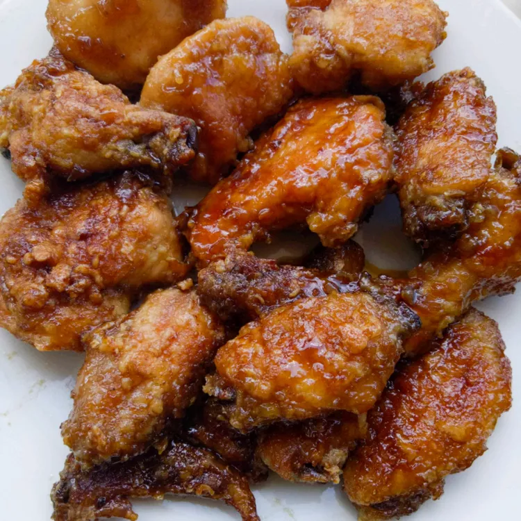

Japanese Chicken Wings

Description:
These Japanese chicken wings are egged and fried in butter, then baked in a
tangy sauce of soy sauce, water, sugar, vinegar, garlic powder, and salt.
Delicious, sticky chicken wings!
Ingredients:
- 1 large egg, lightly beaten
- 1 cup all-purpose flour for coating
- 3 pounds chicken wings
- 1 cup butter
Sauce:
- 1 cup white sugar
- 1/2 cup white vinegar
- 3 tablespoons soy sauce
- 3 tablespoons water
- 1 teaspoon salt
- 1/2 teaspoon garlic powder, or to taste
Directions
- Preheat the oven to 350 degrees F (175 degrees C)
- Place beaten egg in a small bowl. Place flour in a shallow bowl
- Cut wings in half. Dip each piece in egg, then press in flour to coat
- Melt butter in a large, deep skillet over medium-high heat. Fry coated
wings in hot butter until deep brown on both sides. Place in a shallow
roasting pan
- Make sauce: Mix together sugar, vinegar, soy sauce, water, salt, and
garlic powder in a medium bowl until combined. Pour over wings
- Bake in the preheated oven for 30 to 45 minutes, basting wings frequently
with sauce in the roasting pan. An instant-read thermometer inserted into
the centers of wings near the bone should read 165 degrees F (74 degrees C)